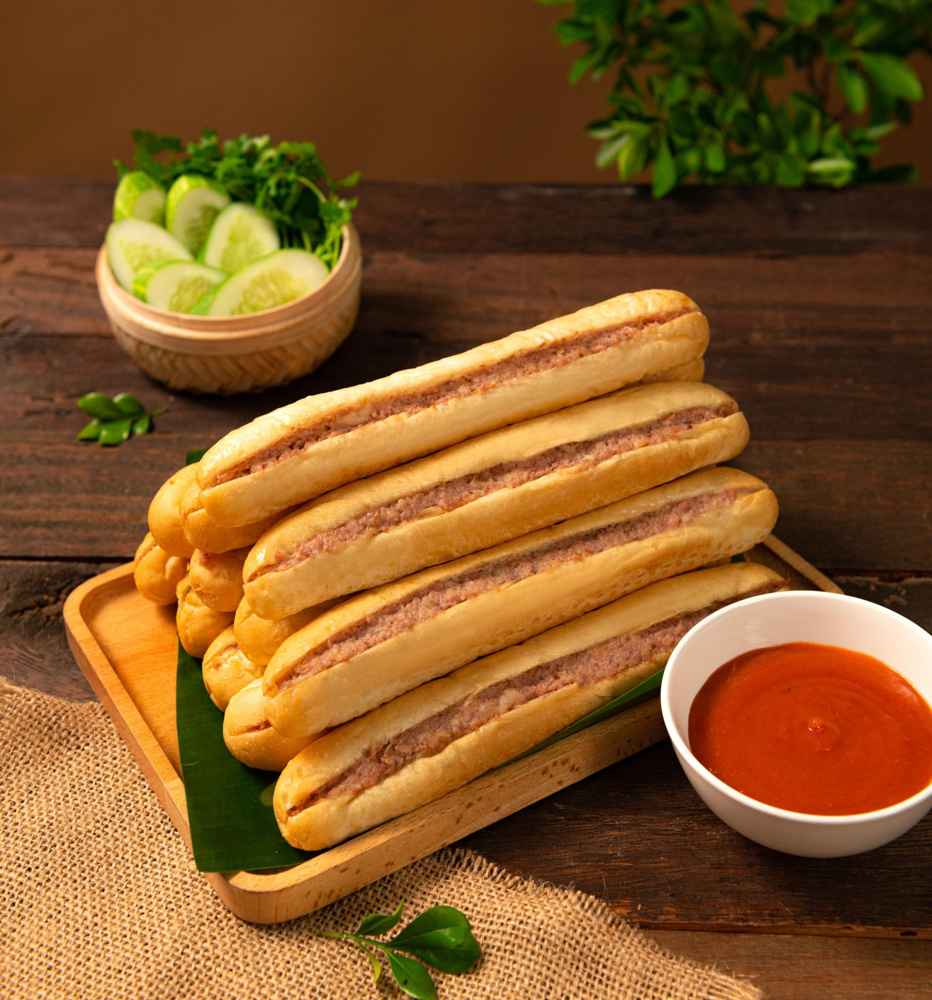
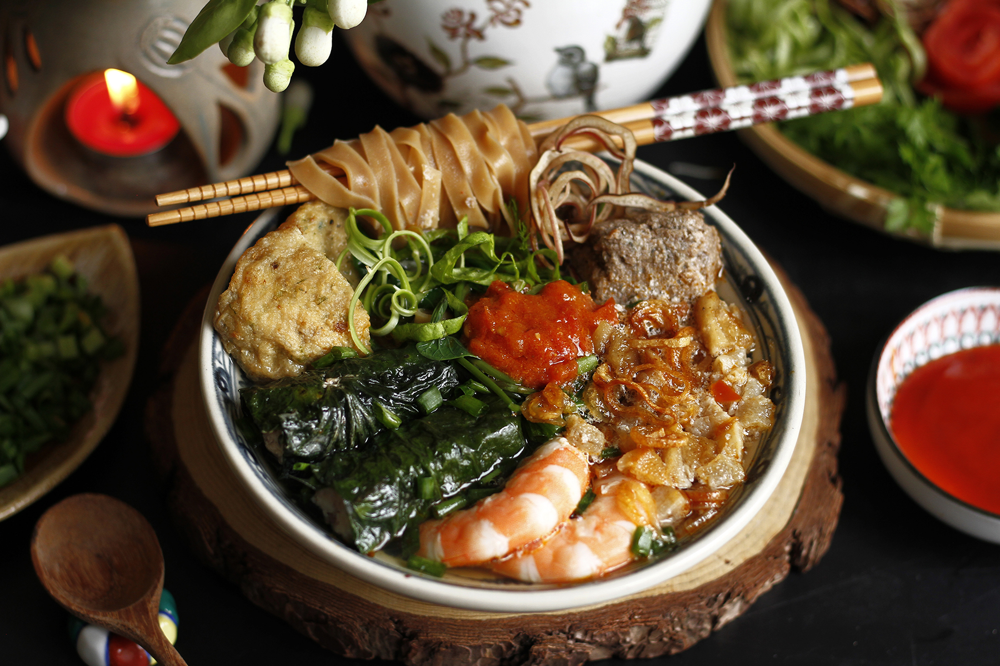
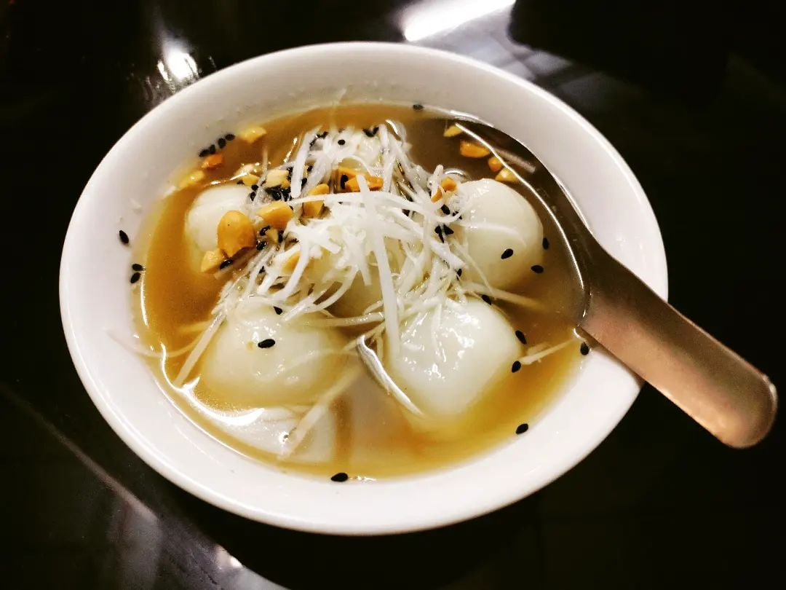

Hai Phong
Haiphong, a vibrant port city of northern Vietnam, enchants visitors with its bustling harbors, lively streets, and striking red flamboyant trees that blaze like fire in the summer sun. Known for its maritime energy and rich cultural heritage, the city effortlessly blends industrial might with serene natural beauty. From the rhythmic waves at Do Son Beach to the tantalizing aroma of the famous crab noodle dish “Banh Da Cua,” Haiphong offers a feast for the senses at every turn. Its unique charm, colorful architecture, and spirited local life make it a destination that lingers in memory long after departure.
Harbor
Haiphong Harbor, the beating heart of northern Vietnam, bustles with life day and night. Ships of all sizes glide through its waters, carrying goods from across the globe, while cranes dance rhythmically along the docks. The salty sea breeze mingles with the sounds of seagulls and ship horns, creating a lively symphony that captures the city’s industrious spirit. From sunrise to sunset, the harbor reflects the perfect balance of natural beauty and human enterprise, making it a must-see landmark for anyone visiting Haiphong.
Cuisine
Haiphong's culinary scene is a vibrant celebration of flavors, blending fresh seafood, aromatic herbs, and bold spices. The city’s coastal location ensures that fish, crab, and shrimp feature prominently in its dishes, often prepared in ways that highlight their natural sweetness. From bustling street stalls to local eateries, each bite tells a story of Haiphong’s maritime heritage and the ingenuity of its people. The cuisine is hearty, flavorful, and unmistakably local, offering a delicious window into the culture and lifestyle of this dynamic port city.
Banh mi cay is a culinary icon of Hai Phong. It can be found at many street food stalls and Hai Phong restaurants. Filled with paté, shredded pork floss, and a touch of chili sauce, the bread is grilled over charcoal until crispy and hot. The combination of crunchy bread, creamy paté, and hot chili creates a tantalizing taste.


Banh da cua is one of the most special variations of Vietnamese noodles, also a signature dish of Hai Phong. It remains the most sought-after treat on every Hai Phong food tour. This dish features soft crab noodles soaked in a rich broth and topped with tender crab meat, grilled pork, pork belly, greens, dried shallots, and spices.
Sui din is a popular snack in Hai Phong. It features the aromatic spiciness of fresh ginger and the subtle sweetness of a broth made from cane sugar. The small, round balls of sui din are soft, chewy, and fragrant. Complemented by roasted peanuts, it brings a distinctively inviting flavor that appeals to many diners.
